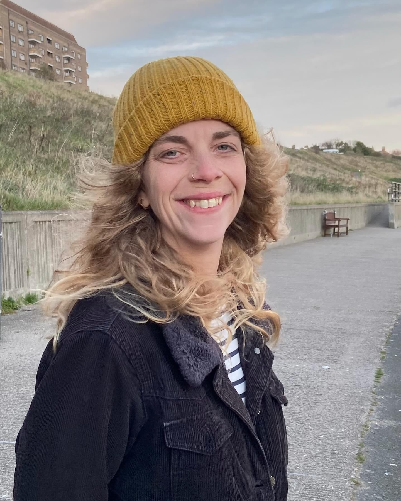
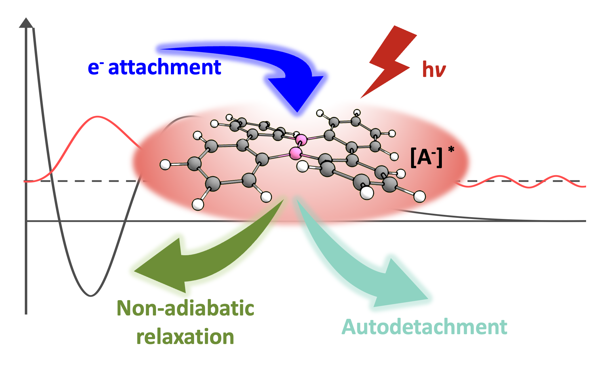
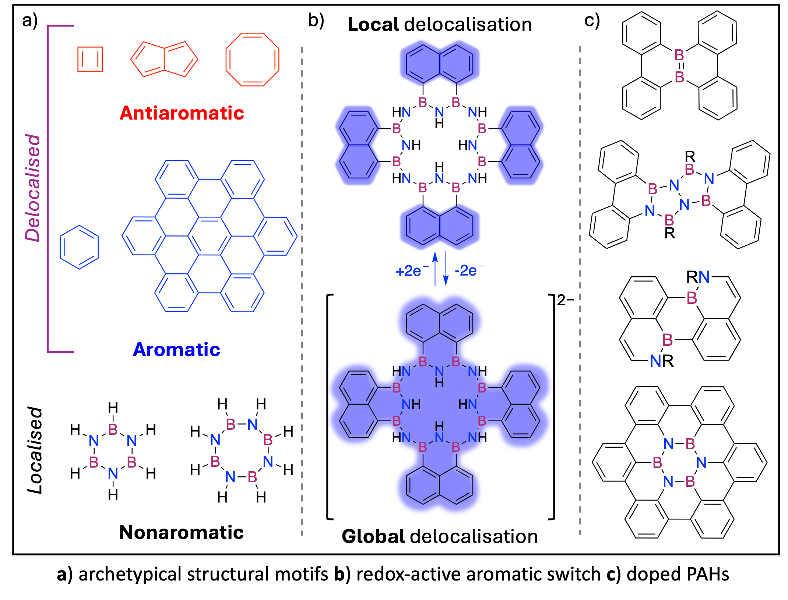

Cate S. Anstöter
Lecturer in Physical Chemistry
Cate is (currently) a theoretical and computational chemist with a PhD in experimental physical chemistry (Durham University, 2019).
She is a lecturer in physical chemistry at the University of Glasgow, having previously held a Christina Miller Research Fellowship at the School of Chemistry, University of Edinburgh.
Her research combines ab initio electronic structure methods and semi-empirical models to calculate and rationalise the structure-property-charge relationship of organic molecules and understand photon and electron driven chemical physics.
Her expertise ranges from frequency-, time- and angle-photoelectron imaging of anions, to developing theoretical/computational protocols to interpret experimental signatures of molecular anions,
to modelling the aromaticity of charged heterocycles.
Her work combining theory and experiment has significantly advanced understanding of the excited (metastable) states of molecular anions. She developed and benchmarked protocols to extract structural information from the
photoelectron angular distributions of anions.
More recently, CSA's research has expanded to developing ab initio methods to calculate and rationalise ring-currents of complex organic compounds.
Combining her knowledge of molecular anions with fundamental physical organic theory, she has developed protocols for calculating the aromatic signatures of redox-active aromatic switches.
About:
- 2025-present: Lecturer, (University of Glasgow)
- 2023-2025: Christina Miller Fellow, (University of Edinburgh)
- 2022-2023: Senior PDRA, Dessent group (University of York)
- 2020-2021: Postdoctoral Fellow, Matsika group (Temple University)
- 2018: Invited Researcher, Bochenkova group (Moscow State University)
- 2015-2019: PhD, Verlet group (Durham University)
- 2014-2015: MPhil, Popelier group (University of Manchester)
- 2010-2014: MChem (University of Sheffield)
Awards and Fellowships:
- 2023: Christina Miller Research Fellowship (University of Edinburgh)
- 2020: Ken Wade Prize for Outstanding Thesis (Durham University)
- 2014: Peter Maitlis Research Prize (University of Sheffield)
Additional:
Contact: cate.anstoter[at]glasgow.ac.uk
Research
Metastable Anions and Electron-Driven Reactivity

Electron-driven processes are ubiquitous in chemistry and biology. When an electron attaches
to a neutral molecule, it forms a negatively charged species — an anion — that is
typically destabilised. Many such states are metastable resonances, existing
in a precarious balance: coupled to the neutral molecule and a free electron, they are
susceptible to spontaneously ejecting that electron in a process called autodetachment. Yet
despite this instability, metastable anion resonances are known to drive a remarkable range
of chemical reactions. Understanding, and ultimately controlling, the interplay between
autodetachment and productive electron-driven reactivity remains one of the central open
challenges in physical chemistry.
Our group develops and extends electronic structure methods capable of modelling the
energetics and lifetimes of these elusive species, with a particular focus on
non-Hermitian quantum chemical approaches uniquely suited to the
complex-valued energetics of resonance states. These methods were recently applied to model
the autodetachment lifetimes of the open-shell tetracene anion, in collaboration with the
Garand group. A key goal of our ongoing
programme is to extend these treatments beyond simple one-particle (shape) resonances to
two-particle-one-hole and other correlated resonance states, and to apply them to larger
molecular systems of chemical and biological relevance. A further dimension of our work
concerns how the environment modulates these processes: in collaboration
with the Matsika group, we have recently shown
that microsolvation can fundamentally alter the character of a resonance — shifting it from
a short-lived shape resonance to a longer-lived Feshbach state — with direct consequences
for the competition between autodetachment, bond cleavage, and energy redistribution into
the solvent.
Related publications
- Revisiting the Nature of Low-Lying π Resonances in Micro-solvated Uracil
Kanishka Vidanelay, Maneesh Pyla, Cate S. Anstöter and Spiridoula Matsika
2026, J. Phys. Chem. Letts, 17, 4561
- Electronic and vibrational spectroscopy of benzonitrile cation for astrochemical consideration
Francis C. Daly, Thomas E. Douglas-Walker, Julianna Palotás, Cate S. Anstöter, Angel Zheng, Ewen K. Campbell
2024, J. Chem. Phys., 161, 074305
- Autoionization from the Plasmon Resonance in Isolated 1-Cyanonaphthalene
James N. Bull, Paola Bolognesi, Cate S. Anstöter, Eleanor K. Ashworth, José E. Navarro Navarrete, Boxing Zhu, Robert Richter, Nitish Pal, Jacopo Chiarinelli, Lorenzo Avaldi, Henning Zettergren & Mark H. Stockett
2023, J. Chem. Phys., 158, 241101
- Spectroscopy and Theoretical Modeling of Tetracene Anion Resonances
Cole R. Sagan, Cate S. Anstöter*, Mushir Thodika, Kenneth D. Wilson, Spiridoula Matsika & Etienne Garand
2022, J. Phys. Chem. Letts, 13, 10245
The Magnetic Fingerprints of Aromaticity

Aromaticity is one of the most powerful organising concepts in chemistry, yet its definition
remains stubbornly elusive. The magnetic criterion, based on the ring
current induced when a conjugated molecule is placed in an external magnetic field, is
widely regarded as the most rigorous theoretical diagnostic. Aromatic systems (those with
4n+2 π electrons) sustain a diatropic ring current; antiaromatic systems
(4n π electrons) sustain a paratropic one.
Our group uses the ipsocentric approach to calculate and visualise these
induced current densities, a method unique in revealing not just the existence of a ring
current, but its physical origin. Through a set of symmetry-based selection rules, the
ipsocentric framework identifies precisely which molecular orbitals are responsible for
aromatic or antiaromatic behaviour, providing a direct and interpretable window into
electronic delocalisation.
In practice, we work closely with synthetic chemistry groups to characterise experimentally
realised systems. We collaborated with the
Wagner group
(Goethe Universität, Frankfurt) on BN- and BO-doped [16]annulenes, macrocyclic
redox-active aromatic switches that transition from non-aromatic to globally
aromatic on two-electron reduction, providing the complete ipsocentric analysis of their
neutral and dianionic states. More recently, collaboration with the
Ingleson group
(University of Edinburgh) on a novel base-free two-coordinate oxoborane, recognised as a
Very Important Paper in Angewandte Chemie, demonstrated the power of the
ipsocentric approach for characterising aromaticity in highly unusual and reactive main-group
heterocycles. These collaborations reflect a broader interest in understanding how heteroatom
substitution, molecular topology, and redox state collectively govern aromatic character in
synthetically realised systems.
Related publications
- Perturbing Pentalene: Aromaticity and Antiaromaticity in a Non‐alternant Polycyclic Aromatic Hydrocarbon and BN‐heteroanalogues
Cate S. Anstöter* & Patrick W. Fowler
2025, ChemPhysChem, Available online
- A Base-Free Two-Coordinate Oxoborane
Clement R. P. Millet, Dominic R. Willcox, Gary S. Nichol, Cate S. Anstöter & Michael J. Ingleson
2024, Angewandte Chemie, 65, e202419094
VIP
- Tetramerization of BEB-Doped Phenalenyls to Obtain (BE)8-[16]Annulenes (E = N, O)
Alexander S. Scholz, Michael Bolte, Alexander Virovets, Eugenia Peresypkina, Hans-Wolfram Lerner, Cate S. Anstöter* & Matthias Wagner
2024, JACS, 146, 12100
- Tuning (Anti) Aromaticity: Variations on the [8]‐Circulene Framework
Patrick W. Fowler & Cate S. Anstöter*
2024, ChemPhysChem, 25, e202300791

{kind=link}